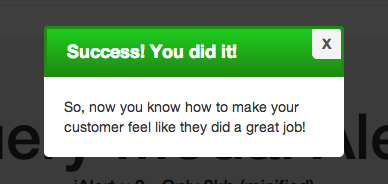

jQuery Modal Alerts
jAlert v.2 - Only 20kb (minified)
Responsive, Easy to Setup, Detailed Comments, Fast
Whether you call it a lightbox, modal, popup, or window, jAlert is an excellent replacement / alternative for Simple Modal, FancyBox, or whatever plugin you're used to.
Demos
Ajax iFrame Photo Default Success Error Un-Close-Able Open Callback Close Callback With Buttons
It's B-E-A-Utiful

This Awesome Plugin Features:
- NO Price Tag (It's Free)
- No-Conflict CSS
- Various Sizes, Buttons, Etc
- Stackable
- Ajax, iFrame, Photo Lightbox
- Easy Callbacks
- Detailed Documentation
- Plug and Play (No setup)
- AND Much More!
Documentation:
Basic Setup
jQuery is required. Make sure you've included the plugin's JS + CSS as well.<!DOCTYPE html> <html lang="en"> <head> <link rel="stylesheet" type="text/css" href="jAlert-v2.css"> </head> <body> <!-- YOUR SITE CONTENT HERE --> <script src='https://code.jquery.com/jquery-2.0.3.min.js'></script> <script src='jAlert-v2.js'></script> <script> <!-- USE PLUGIN HERE --> </script> </body> </html>
Demo
Basic Usage (Alert override enabled)
Alert override enabled by default. To disable, delete it from the bottom of the jAlert JS file.
alert('Testing');
Demo
Basic Usage (Alert override disabled)
$.fn.jAlert({
'message': 'Testing'
});
Demo
Optional Error Function (enabled by default)
errorAlert('Oh No!');
Demo
Optional Success Function (enabled by default)
successAlert('Yay!');
Header Options
Demo
With a Header/Title
$.fn.jAlert({
'title': 'jAlert with a header',
'message': 'Howdy :D'
});
Demo
With Success/Green Header
$.fn.jAlert({
'title': 'Success',
'message': 'You did well!',
'theme': 'success'
});
Demo
With Error/Red Header
$.fn.jAlert({
'title': 'Error',
'message': 'You suck!',
'theme': 'error'
});
Demo
With Info/Blue Header
$.fn.jAlert({
'title': 'Cool',
'message': "I'm feelin' blue.',
'theme': 'info'
});
Demo
With Dark/Black Header
$.fn.jAlert({
'title': 'Darky',
'message': 'I guess you did alright.',
'theme': 'dark'
});
Content Options
Demo
Embedded / Static Message
$.fn.jAlert({
'title': 'Embedded / Static Message',
'message': 'I am passed to jAlert manually'
});
Demo
iFramed Content
$.fn.jAlert({
'title': 'iFrame of NoMoreAgent.com',
'iframeUrl': 'https://nomoreagent.com',
'iframeHeight': '600px',
'message': '<br><br>Optionally, you can append content to the alert.'
});
Demo
Ajaxed Content
$.fn.jAlert({
'title': 'Ajaxed Content',
'iframeUrl': 'ajax.php',
'message': '<br><br>Optionally, you can append content to the alert.'
});
Demo
Image Content (Basically a "LightBox" Alternative)
$.fn.jAlert({
'title': 'Image Title',
'imgUrl': 'http://farm4.staticflickr.com/3533/3872606628_9591e05d16_o.jpg',
'message': '<br><br>Optionally, you can append content to the alert.'
});
Demo
Image Content Without Header
$.fn.jAlert({
'imgUrl': 'http://farm4.staticflickr.com/3533/3872606628_9591e05d16_o.jpg',
'clickAnywhere': true
});
Close Options
Demo
Hide Close Button (top right x)
$.fn.jAlert({
'title': 'No close button',
'message': "Where'd it go? (click anywhere to close, or press ESC)",
'closeBtn': false
});
Demo
Enable Close When You Click Anywhere
$.fn.jAlert({
'title': 'Click the X to close this alert',
'message': 'Or you can press the ESC button.',
'clickAnywhere': true
});
Demo
Disable Close When You Click ESC
$.fn.jAlert({
'title': 'Click the X or Anywhere Else',
'message': 'Clicking ESC will not do anything.',
'hideOnEsc': false
});
Demo
Disabled All Close Options
$.fn.jAlert({
'title': 'You cannot close this Alert',
'message': 'Refresh your page to close this alert (you can add buttons that will close it if you would like. For instance, forcing someone to like your facebook page before they can view the page)',
'hideOnEsc': false,
'closeBtn': false
});
Button Options
Demo
Plain Button
$.fn.jAlert({
'message': 'Just a simple button to close the alert.',
'btn': [
{'label':'Close', 'closeOnClick': true }
],
'size': 'small'
});
Demo
Colored Button
$.fn.jAlert({
'message': 'The button is green, but could be green, blue, or red.',
'btn': [
{'label':'Click Here', 'cssClass': 'green', 'closeOnClick': true }
],
'size': 'small',
'autofocus': 'btn:first'
});
Demo
Multiple Buttons
$.fn.jAlert({
'message': 'Rainbow :D',
'btn': [
{'label':'Click Here', 'cssClass': 'green', 'closeOnClick': true },
{'label':'OR HERE', 'cssClass': 'blue', 'closeOnClick': true },
{'label':'Maybe Here?', 'cssClass': 'red', 'closeOnClick': true }
],
'autofocus': 'btn:last'
});
Demo
Button CallBack
$.fn.jAlert({
'message': 'Click 4 Console',
'btn': [
{'label':'Click Here', 'cssClass': 'green', 'closeOnClick': false, 'onClick': function(){ console.log('Hi there!'); } }
]
});
Demo
Open another Alert (Replace)
This example shows setting closeOnClick to true to remove this alert when the button is clicked.
$.fn.jAlert({
'message': 'Replace Me',
'btn': [
{'label':'Do It', 'cssClass': 'blue', 'closeOnClick': true, 'onClick': function(){$.fn.jAlert({'message':'DONE', 'title':'Success!', 'theme': 'success'}); } }
]
});
Demo
Open another Alert (On Top)
This example shows setting closeOnClick to false to keep the alert around even when clicked.
$.fn.jAlert({
'message': 'Cover Me',
'btn': [
{'label':'Do It', 'cssClass': 'blue', 'closeOnClick': false, 'onClick': function(){ $.fn.jAlert({'message':'DONE', 'title':'Success!', 'theme': 'success'}); } }
]
});
Misc Options
Demo
Sizes
$.fn.jAlert({
'title': 'Different Sizes',
'message': 'I am small, but could be small, medium, large, or full.',
'size': 'small'
});
Demo
Open Modal, Close any Others
$.fn.jAlert({
'message': 'I\'m not really needed anymore.',
'btn': [
{
'label':'Open the real Demo jAlert', 'cssClass': 'blue', 'closeOnClick': false, 'onClick': function(){
$.fn.jAlert({
'title': 'Call me "The Replacer"',
'message': 'I\'m lonely now.',
'replace': true
});
}
}
]
});
Demo
Adding Classes
$.fn.jAlert({
'title': 'Added CSS Class',
'message': 'I have an extra class (poo)',
'cssClass': 'poo'
});
Demo
Adding an ID
$.fn.jAlert({
'title': 'Added CSS ID',
'message': 'I have an ID (poo)',
'id': 'poo'
});
Demo
Auto-focusing on an Element
NOT WORKING CORRECTLY FOR SOME REASON, WANNA HELP? GO TO GITHUB AND BRANCH OFF
$.fn.jAlert({
'title': 'Auto-focus on an Anchor',
'message': 'I am auto-focused on an anchor in the content, but I could be any DOM element in the alert you would like, OR you can use btn:first or btn:last to set it to one of the buttons you will learn about in the next section. <a class="btn btn-primary">HI</a>',
'autofocus': '.btn'
});
CallBacks
Demo
onOpen Callback
$.fn.jAlert({
'title': 'onOpen Callback',
'message': 'Check your javascript console!',
'onOpen': function(){
console.log('It opened right up!');
}
});
Demo
onClose Callback
$.fn.jAlert({
'title': 'onClose Callback',
'message': 'Check your javascript console!',
'onClose': function(){
console.log('It closed right up!');
}
});
Public Functions
Demo
Show / Hide Existing Alert
Once you have created an alert, if it's been hidden, you can show it again using this public function
$.fn.jAlert({
'title': 'Show / Hide Existing',
'message': 'This will hide immediately, and reopen in 2 seconds',
'onOpen': function(alert){ //when the alert opens
alert.closeAlert(false); //the false means don't remove it, just hide it.
setTimeout(function(){ alert.showAlert(); }, 2000);
}
});
.closeAlert() accepts 2 arguments. The first, is a boolean on whether or not to completely remove the alert, or just hide it. If you don't plan on showing it again, it is recommended you just remove the thing to keep a slim DOM. The second is an on-close callback. The original onClose will not be utilized if you manually close an alert.
Example usage:
myAlert.closeAlert(false, function(){ console.log("I'm closed now, but only hidden!"); });
.showAlert() accepts 3 arguments. The first, is a boolean on whether or not to overlap other alerts, or hide them (true = overlap, false = hide all others). The second argument is only used if the first is true, and it is another boolean that determines whether or not to hide or remove completely any existing alerts (true = remove, false = hide). So if you'd like to temporarily hide all other alerts to show once, then manually show one again, this is for you! The third argument is an onOpen callback.
Example usage:
myAlert.showAlert(false, false, function(){ console.log("I just came from the dead and all other alerts were hidden to make room for me."); });
Optional Facebook Savings Popup
Demo by pushing the red button on the left
This awesome popup displays a promo code after posting a custom message to your customer's Facebook wall.
You'll need some Facebook APP Knowledge to set this up, but it should be fairly easy if you've ever created an app. IT IS dependent on JAlert, but could be easily converted to work with any modal
Customize it to do whatever you want after they connect via Facebook.SAVE 10% NOW!
<a class='jSave'> SAVE 10% NOW! </a> <script src='jAlert-FB.js'></script> <link rel='stylesheet' href='jAlert-FB.css' />
Notes/Limitations
- To repeat: jQuery is REQUIRED
- If you use an onClose callback, clickAnywhere will be automatically set to false, otherwise it gets hit off a million times.
- If you add buttons to your alert, clickAnywhere will be automatically set to false, otherwise they wouldn't work.
- If you have autofocus set, clickAnywhere will be automatically set to false, otherwise when you click on whatever's auto-focused, it would be ignored.
- If you want to style the buttons, you'll need to either use the jBtn class, or remove it from your CSS so it doesn't interfere.
- When autofocus is set to btn:first or btn:last, it's converted to .jBtn:last or .jBtn:first automatically. It doesn't actually search for an element called btn...
- Sizes can be small, medium, large, full OR their shortcuts sm, md, lg, full
- The themes are converted to classes. You don't need to use theme if you can remember the class names. They are: jDark, jSuccess, jError, and jInfo.
- I tried to append most things with j to keep them from interfering with your current class names.
- I'm sure there are ways to optimize the ESC key and clickAnywhere keyup/click handlers and some other stuff. Your suggestions are MORE THAN WELCOME. I am pretty comfortable with jQuery, but know I still lack some advanced technique knowledge.
Comments / Questions / Answers
License (M.I.T)
Copyright (c) 2014 Versatility WerksPermission is hereby granted, free of charge, to any person obtaining a copy of this software and associated documentation files (the "Software"), to deal in the Software without restriction, including without limitation the rights to use, copy, modify, merge, publish, distribute, sublicense, and/or sell copies of the Software, and to permit persons to whom the Software is furnished to do so, subject to the following conditions:
The above copyright notice and this permission notice shall be included in all copies or substantial portions of the Software.
THE SOFTWARE IS PROVIDED "AS IS", WITHOUT WARRANTY OF ANY KIND, EXPRESS OR IMPLIED, INCLUDING BUT NOT LIMITED TO THE WARRANTIES OF MERCHANTABILITY, FITNESS FOR A PARTICULAR PURPOSE AND NONINFRINGEMENT. IN NO EVENT SHALL THE AUTHORS OR COPYRIGHT HOLDERS BE LIABLE FOR ANY CLAIM, DAMAGES OR OTHER LIABILITY, WHETHER IN AN ACTION OF CONTRACT, TORT OR OTHERWISE, ARISING FROM, OUT OF OR IN CONNECTION WITH THE SOFTWARE OR THE USE OR OTHER DEALINGS IN THE SOFTWARE.